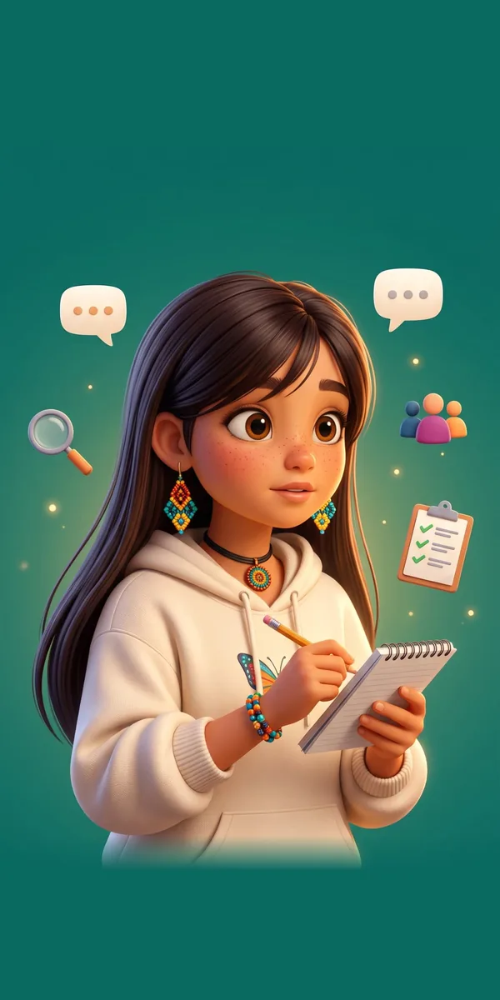

Conocer el aula
Caracterizar las condiciones pedagógicas en las que se desarrolla el pensamiento ciudadano en 4.º y 5.º, para establecer los requisitos de diseño de la hipermedia.
Sorteo de grupos y estudiantesUn grupo de 4.º y uno de 5.º
Se sortean un grupo de 4.º y uno de 5.º, que participan en todo el proyecto. Luego, entre los estudiantes con autorización de su acudiente y su propio asentimiento, se sortean 12 por grupo, cuyos datos se analizan, y 2 o 3 suplentes.
Entrevista a docentesDocentes de 4.º y 5.º de la sede A
Una conversación con cada docente sobre cómo trabaja la formación ciudadana en su clase y con qué recursos cuenta. La participación es voluntaria.
Grupo focal con estudiantesLos 12 estudiantes sorteados de cada grupo
Una conversación en grupo, guiada con imágenes de situaciones cotidianas. Se hace cuando ya están firmadas las autorizaciones de los acudientes.
Observación de clasesLos dos grupos sorteados
Un investigador observa la clase sin intervenir. También se registran los equipos y la conectividad de las aulas, para saber dónde va a funcionar la hipermedia.
Revisión de documentosDocumentos institucionales
Se revisan el PEI, el plan de estudios, la malla de Ciencias Sociales y los textos y materiales de clase.
Definición de requisitosSolo el equipo investigador
El equipo organiza lo que encontró y define qué debe tener la hipermedia. Estas dos semanas no tienen actividades con docentes ni estudiantes.
Las actividades con participantes las realizan los tres integrantes del equipo.
